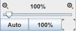

画布
画布是 Logisim-evolution 中最醒目的区域；可以在这里绘制电路及其符号，并最终仿真其运行。

它仅由几个元素组成：
水平和垂直滚动条：它们的工作方式与大多数程序相同，只需拖动滑块即可将视图移动到绘图的其他部分。也可以通过键盘或鼠标使用以下组合来操作它们：
- 鼠标滚轮或上/下方向键：垂直滚动
- Shift + 鼠标滚轮或 左/右方向键：水平滚动
- PgUp：向上翻页
- PgDn：向下翻页
当原理图大于当前显示区域时，会出现范围指示器。显示在角落和/或侧边的引导线指示了电路图向哪些方向延伸。下面是顶部范围指示器的示例。
居中按钮 ：将电路图中心移动到工作区中央。
缩放：左下角有缩放控件。可以通过拖动滑块、使用倍率左右两侧的按钮，或在工作区中使用Ctrl + 鼠标滚轮来改变缩放。

按钮 100% ：按实际大小显示电路图。
按钮 Auto ：调整缩放，使整个电路图可见。
网格按钮：位于缩放控件右侧，用于在“显示网格”和“隐藏网格”之间切换。
下一节： 菜单。